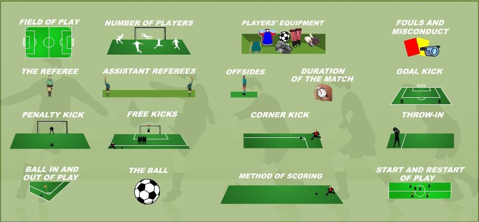
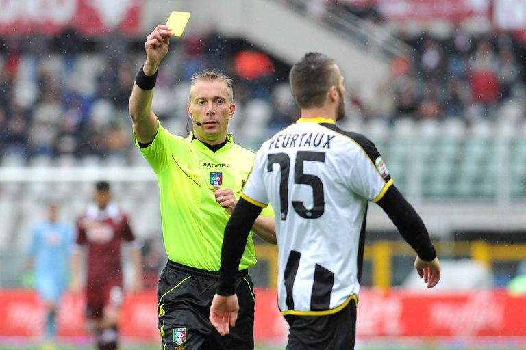

All About Soccer
Basic Rules

There are many basic rules that a player must follow for the game to be played safely. Here is a list of basic rules that everyone needs to know.
- THERE IS NO TOUCHING THE BALL WITH YOUR HANDS INTENTIONALLY(unless you are the goalie).
- There can only be eleven players on the field per team, and ten exculding the goalie.
- No fouling players such as tripping, pushing, etc. If this is done, the other team may be rewarded a free kick or penalty kick. If the offense is extreme, the player may get a yellow card or red card, which will result in immidiate ejection from the field.
- A ball is out when it crosses the marked-out lines.
- When the ball goes out on the side lines, it is a throw-in. A thrown-in is taken by bringing the ball behind your head and throwing it over your head. The player's feet must stay on the ground while taking a throw-in.
- Goal kicks occur when the ball crosses the goal line.
- Pentaly kicks occur when a foul occurs in the penalty area.
- The offsides rule is a very important rule that most people do not know about. A player is considered offsides if they are closer to the opponent's goal line than the last defender, in which case the other team gets a free kick from where the faul was assesed.
- The main objective of the game is to score in the other team's goal. This can be done by passing the ball around to players around the field to look for a chance to score on goal.
- Every player must have soccer cleats and shin guards to play in a game, as well as the team's uniforms.
- Do not argue or be rude to the refrees or else you may get a card.
